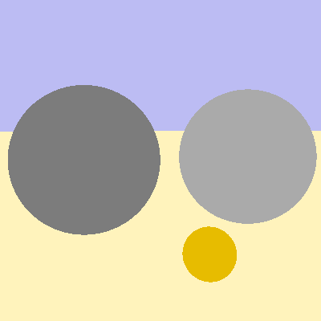

**Mondes 3D TD1 - Moze Jonathan**
Rayons primaires
=========
Génération des rayons
------------------
Cette première partie concerne la génération de rayons. La fonction sampleRay permet de créer un rayon en fonction de la position d'un pixel.
C'est sur cette partie que j'ai eu le plus de mal pour trouver le vecteur de direction du rayon en fonction des vecteurs donnés (m_camf, m_camx, m_camy).
Mais j'ai finalement réussi a calculer cette direction(voir le code).
La seconde chose à implémenter à été la fonction intersect de scène qui va être chargée de chercher, pour chaque rayon, si il y a une intersection entre ce rayon
et un élément de la scène et de renvoyer l'intersection(hit) la plus proche de la caméra. Il suffit donc d'itérer sur la liste d'éléments de la scène et d'utiliser
la fonction intersect de cet élément pour savoir si le rayon a une intersection avec l'élément.
Une fois cela fait, Nous pouvons maintenant implémenter l'intégrateur, pour l'instant l'intégrateur "Flat" qui se contente de renvoyer l'albedo(couleur ambiante) de
l'élément intersecté par le rayon. Si il n'y a pas d'élément intersecté nous renvoyons la couleur du fond de la scène.
Sphères
-------
Pour povoir voir les sphères de la scène apparaitre, il faut encore compléter la classe Sphère, et sa fonction Intersect que j'ai mentionné plus haut. Cette fonction à
pour but de renvoyer l'intersection(hit) la plus proche de la caméra entre notre rayon et la sphère. Pour cela il faut développer une équation avec l'équation d'une sphère
et l'équation du rayon.
voici l'équation développée :
$$
t² + 2t(d\cdot(o-c)) + (o-c)\cdot(o-c)-r² = 0
$$
avec:
* t, le temps(distance) entre la caméra et le point d'intersection,
* d, la direction du rayon,
* o, l'origine de notre rayon(la caméra),
* c le centre de la sphère,
* r le rayon de la sphère.
C'est une équation du second degré, il suffit donc ensuite de calculer le discriminant puis les racines afin d'avoir 0, 1 ou 2(point d'entrée et de sortie) intersections.
Si nous en avons deux, il faut prendre la plus petite racine toujours afin d'avoir le point d'intersection le plus proche de la caméra.
Première image
--------------
Maintenant que nous avons implémenté cela, nous devons finir par compléter la fonction render de la classe Viewer. Cette fonction a pour but de parcourir tous les pixels de la
fenêtre de rendu, lancer un rayon pour chaque pixel et d'utiliser notre intégrateur pour trouver la couleur que doit avoir ce pixel et lui appliquer.
Voici le résultat :
Ce résultat nous permet de conclure que toute notre première partie du TD est bien implémentée.
Plans
-----
Maintenant que nous avons obtenu notre première image, nous pouvons maintenant implémenter l'affichage d'un plan. En ayant fait l'affichage de la sphère, l'affichage d'un plan
est bien plus simple. Il nous suffit juste d'implémenter la classe "Plan" et sa fonction intersect. De la même manière que pour la sphère il faut résoudre une équation avec
l'équation d'un plan et l'équation de notre rayon pour en trouver l'intersection.
Voici l'équation développée :
$$
t = \frac{(a-o)\cdot n}{d\cdot n}
$$
avec:
* t, le temps(distance) entre la caméra et le point d'intersection,
* d, la direction du rayon,
* o, l'origine de notre rayon(la caméra),
* a, un point du plan à sa surface,
* n, la normale du plan.
La scène pétenque nous permet de confirmer notre implémentation de la classe Plan :

Éclairage local
=========
Normales
--------
Pour l'éclairage, nous allons avoir besoin des normales des surface au point d'intersection avec le rayon. Nous allons donc implémenter pour cela un nouvel intégrateur "Normals" qui
va nous permettre de vérifier notre ajout des normales aux points d'intersection d'une sphère et d'un plan.
Le calcul des normales se fait de manière triviale pour la sphère en calculant le vecteur entre le centre de la sphère et le point d'intersection puis en le normalisant. Pour le plan,
nous avons déjà sa normale il suffit de le mettre dans le point d'intersection.
Notre intégrateur va seulement récupérer les composantes de la normale en valeur absolue au point d'intersection et créer une couleur RGB avec.
Voici le résultat :
Calcul de l'éclairage
---------------------
Maintenant que nous avons nos Normales, nous pouvons commencer l'implémentation de la lumière. Nous allons pour cela créer un nouvel intégrateur "Direct".
Cette intégrateur va calculer la couleur aux points d'intersection de la scène en fonction de la normale à la surface de l'objet, du materiau calculé par la BRDF de Phong, et des lumières
de la scène.
voici le calcul implémenté pour le modèle de Phong :
$$
rho = {rho}_{d} + {rho}_{s} (max(R \cdot v, 0))^r
$$
avec:
* rho_d, la reflection diffuse idéale,
* rho_s, la reflexion non idéale(Glossy),
* R, le vecteur réfléchi du vecteur de direction de la lumière
* r, un coefficient de rugosité
et V le vecteur correspondant à:
$$
V = L - 2(N \cdot L)
$$
avec :
* L, le vecteur de direction de la lumière,
* N, la normale à la surface.
Il faut aussi implémenter la fonction intensity afin d'avoir l'atténuation de la la lumière en fonction de la distance de celle-ci avec l'objet, qui décroit de manière quadratique.
Une fois cela implémenté, il faut s'occuper de l'integrateur direct. On reprend la même base que l'intégrateur Flat mais on ajoute une boucle pour chaque Lumières de la scène
et implémenter l'équation donnée dans le sujet pour sommer les couleurs de chaque lumière au point d'intersection.
nous avons ainsi ce résultat pour la scène troisSpheres :
et celui ci pour la scène phong :
Ces deux résultats sont identiques avec les illustrations du TD donc l'implémentation semble correcte.
Rayons secondaires
=========
Ombres portées
--------------
L'ajout d'ombre portées est plutot simple, il suffit de lancer un nouveau rayon(de la même manière que le rayon principal) en direction de la source de lumière et si le temps(distance)
d'intersection est inferieur à la distance entre notre point et la source de lumière, c'est qu'il y a un objet qui bloque le passage de lumière. ainsi on ne prend pas en compte cette
lumière pour la couleur du pixel qu'on est en train de calculer.
voici le résultat de l'ajout des ombres sur la scène troisSpheres :
et le résultat de la scène pétanque:
Rebonds multiples
-----------------
Nous sommes maintenant à la dernière partie du TD où nous allons implémenter les rebonds multiples pour les surfaces réfléchissantes. Pour cela, si la surface que l'on intersecte
au premier lancé de rayon est réfléchissante, on relance un rayon dans la direction miroir du premier rayon par rapport à la normale. Si ce second rayon intersecte un objet, il renvoie
une couleur, et cette couleur est sommée avec la couleur du rayon principal pour avoir l'effet de réflection.
On peut aussi avoir deux objets qui se refléchissent entre eux, nous devons y faire attention car ces rebonds de rayons sont fait de manière récursive.
Pour effectuer cela, nous implémentons un nouvel intégrateur "Whitted".
Lors de l'ajout de la couleur secondaire à la première il faut quand même la multiplier par le produit scalaire entre la normale et la direction de réflexion, et l'albedo du materiau,
qui est compliqué à calculer et donc approximé dans notre cas.
Voici les résultats pour la scène pétanque_miror avec une récursion des lancers de rayon de maximum 4:
Et les résultats pour la scène mirrors :
Nous avons maintenant terminé le TD1. Je n'avais pas pris connaissance du rapport à effectuer, je n'ai donc pas pris d'images lorsque j'avais des bugs ou des choses mal implémentées.
J'y penserai pour le prochain TD pour montrer plus visuellement l'évolution.